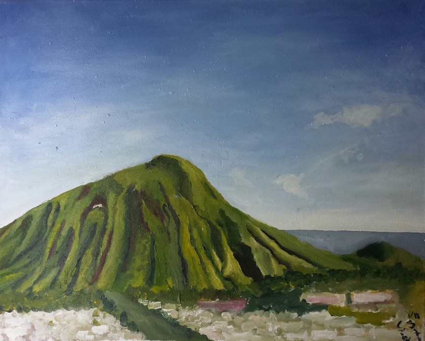
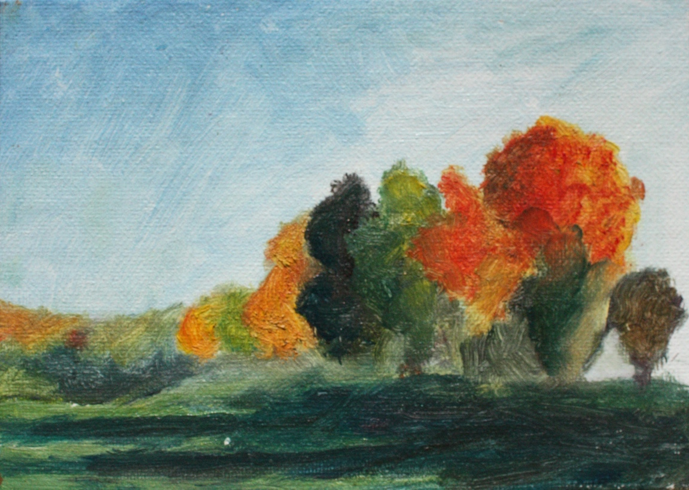
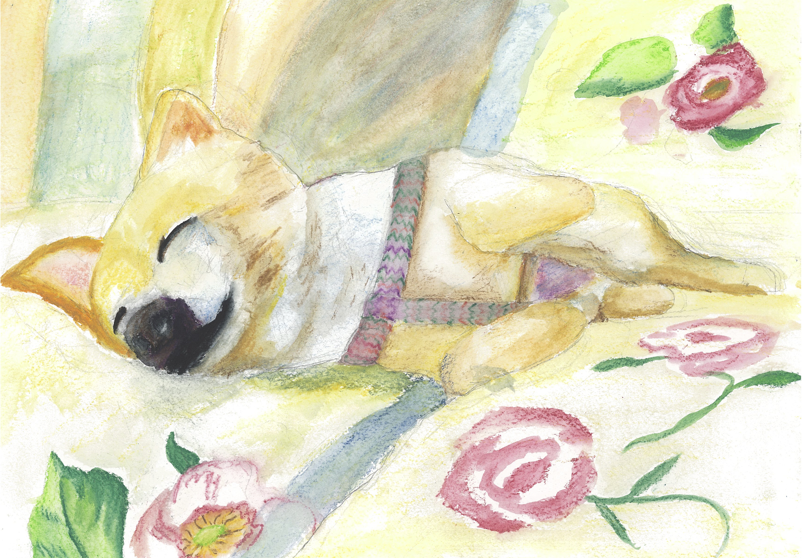
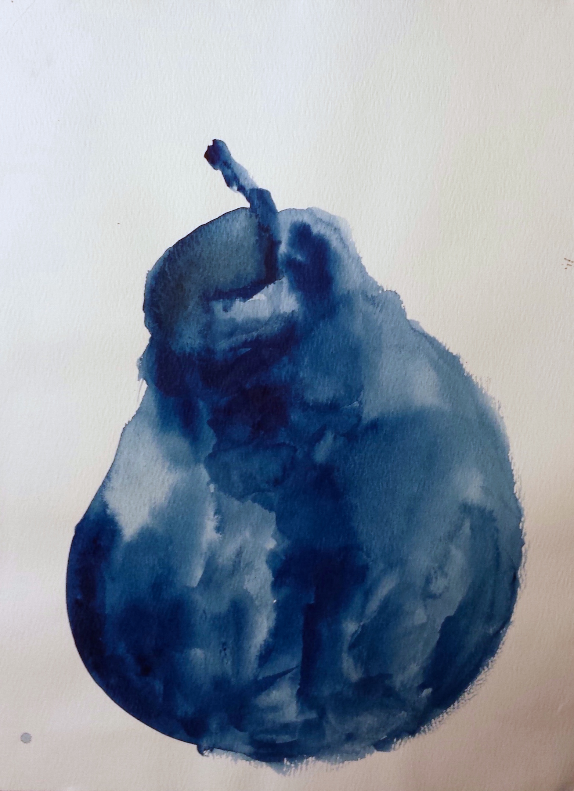

My Influences

Hawaii
I was raised in Hawaii where I grew bananas in my back yard and went to the beach on weekends. When I return I like to see family, surf, and hike.

Engineering College
I wanted to solve problems, so I attended Olin College where I studied engineering. I ended up focusing on design because I like the process of figuring out what to build and why.

Ollie
I have a dog named Ollie. He has his own Instagram.

Painting
In my free time I like to paint. I used to paint in oil, but recently I've been doing more watercolor and inkbrush.